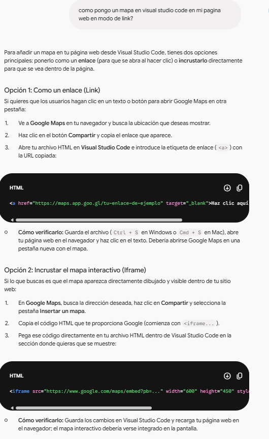
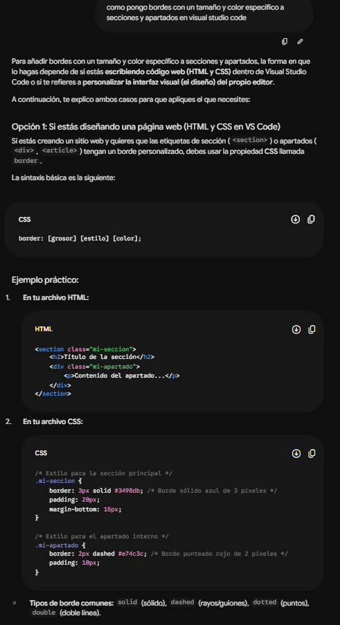
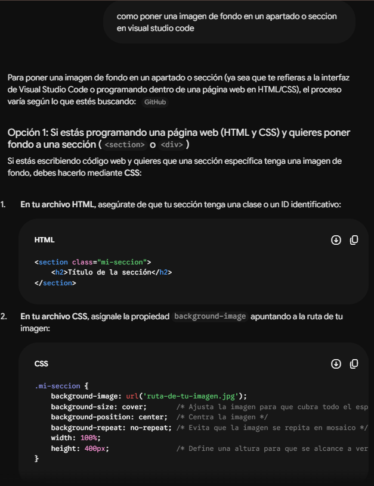

De que va el proyecto?
El proyecto es seguir creando una pagina web que estaba desarrollando una programadora, para un cine que va abrir en el centro de donostia. El cine se va llamar CineBerri y la pagina web va a servir para informar a la gente sobre el cine. Se puede abrir poniendo informacion adecuada del cine y gestionando bien la pagina web.
Explicación del Trabajo Realizado por Pasos
1. Crear la estructura de Html de cada apartado y luego revisarla, para corregir errores.
2. Después de revisar la estructrura, ordenarla en secciones en Html
3. Luego, aplicar el CCS a la estructura segun cada seccion y por del style.css.
4. Después, revisar el estilo aplicado, para ver si hay errores.
5. Por ultimo, verificar si el trabajo cumple con todos los requisitos.
Reflexion Personal
¿Qué parte de la actividad te ha resultado más difícil?
La parte que me ha resultado mas dificil es la parte de html, porque en algunas partes me ha costado ponerlo de forma correcta. Por ejemplo, a la hora de poner el enlace de google maps en el apartado de Ubicación para que funcione correctamente.
¿Qué has hecho cuando algo no funcionaba?
Cuando algo no funcionaba he cosultado los apuntes o intentando resolverlo de otra manera, pero si no me salia ahi, he cosultado a la IA para saber como se podia hacer para luego hacerlo yo mismo a mi estilo.
¿Qué has probado antes de pedir ayuda?
Lo que he probado antes de pedir ayuda es resivar la estrutura de esa parte para ver si estaba correctamente escrita y de forma correcta.
¿Qué recurso o estrategia te ha ayudado más?
El recurso o estrategia que me ha ayudado mas son los apuntes de HTML y CSS. Además de colsultar paginas de como utilizar algunos comandos.
¿Qué harías de forma diferente si tuvieras que repetir la actividad?
Lo que haria de forma diferente seria la parte de html, para organizar mejor la estructura y los comandos.
Evidencias del uso de la IA como herramienta de trabajo
Evidencia 1
Consultando la inteligencia artificial para poner un link hacia ggogle maps en el apartado de Ubicación.

Evidencia 2
Consultandola para saber como poner bordes con un tamaño y color especifico a secciones y apartados.

Evidencia 3
Cosultandola para saber como poner una imagen de fondo en un apartado o seccion
